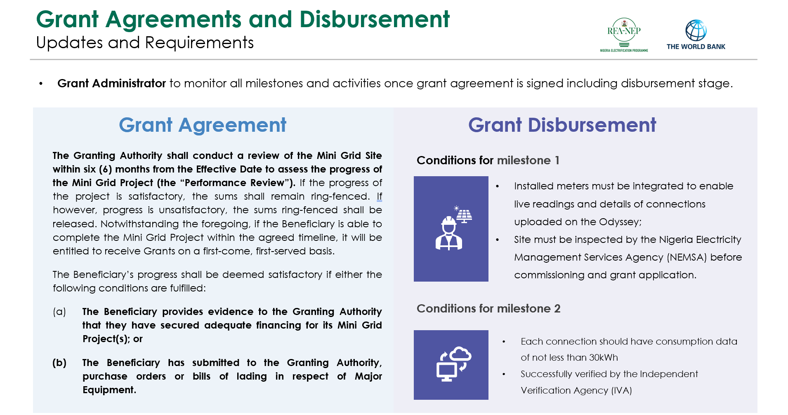
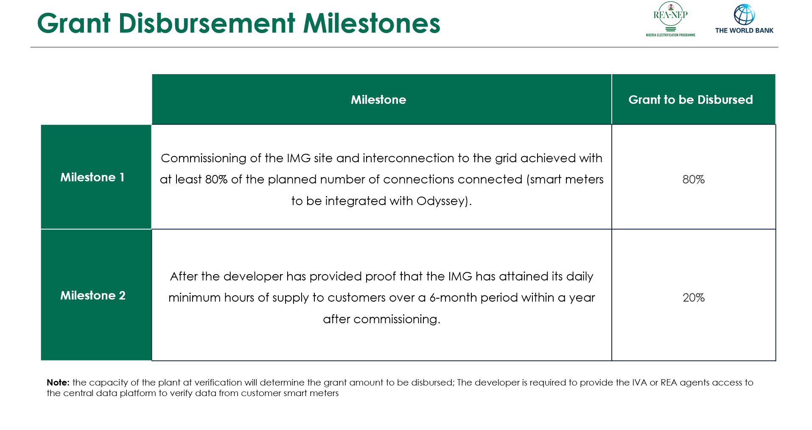
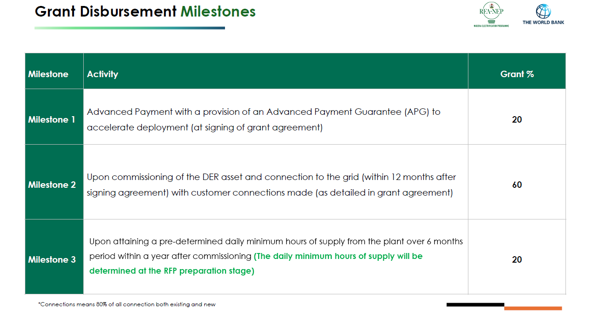
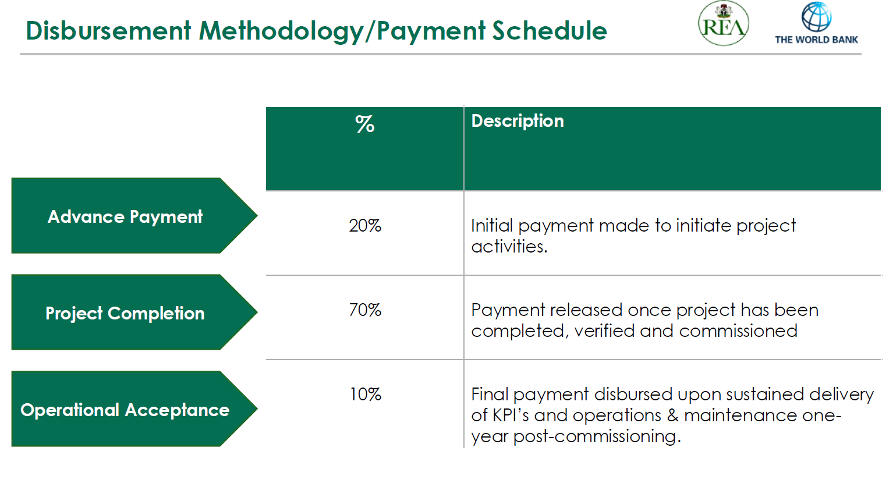

Overview
The solar hybrid mini-grid component aims to support the development of private-sector mini-grids in unserved and underserved areas with high economic growth potential, and to expand access to affordable, reliable, and clean electricity for communities across Nigeria. Implementation is delivered through two major funding windows:Performance-Based Grants (PBG) and Minimum Subsidy Tender (MST). These mechanisms ensure efficient deployment, competitiveness, and optimal use of public funds.
Funding Windows
Performance-Based Grant (PBG)
The Performance-Based Grant (PBG) provides targeted financial support to mini-grid developers to accelerate electricity access in unserved and underserved communities. Grants are awarded based on verified performance, ensuring that funds directly contribute to real connections and sustainable project delivery.
For isolated mini-grids, incentives are calculated per new customer connection. For interconnected mini-grids, subsidies are provided as a percentage of capital expenditure (CAPEX) or a fixed amount per installed capacity (US$/kW or MW).
Under PBG, grant values are differentiated by location, socio-economic conditions, and consumer category, including residential users and Productive Use of Energy (PUE) customers. All eligible projects must demonstrate minimum commercial load requirements to ensure long-term operational sustainability.
Minimum Subsidy Tender (MST)
The Minimum Subsidy Tender (MST) is designed to aggregate demand and package portfolios of mini-grid projects for competitive tendering. Under this model, mini-grids are privately financed, owned, and operated, ensuring strong private-sector participation and long-term project viability.
For isolated mini-grids, incentives are calculated per new customer connection. For interconnected mini-grids, subsidies are provided as a percentage of capital expenditure (CAPEX) or a fixed amount per installed capacity (US$/kW or MW).
Under PBG, grant values are differentiated by location, socio-economic conditions, and consumer category, including residential users and Productive Use of Energy (PUE) customers.
Solar Hybrid Mini-Grid Components
- • Isolated Mini-Grids
- • Interconnected Mini-Grids
- • Public Institutions Solar Project (PISP)
- • Subnational Interventions
This sub-component targets remote and hard-to-reach communities with the deployment of 1,100 mini-grids of up to 1MW capacity each. Implementation is developer and REA-led using the PBG and MST models respectively.
Isolated mini-grids, incentives are calculated per new customer connection.
Performance Based Grant (PBG)

Designed for urban and peri-urban areas classified as Band C and below by DisCos, this sub-component aims to deploy 125 interconnected mini-grids (up to 1MW each).
Performance Based Grant (PBG)

Minimum Subsidy Tender (MST)

This private-sector-led initiative provides reliable solar hybrid systems to selected public institutions including federal universities and their associated teaching hospitals. The scope includes solar powered systems, street lighting, renewable energy workshop and training centres, and distribution network upgrades.
Lessons learned from the Energizing Education Programme Phase II (EEP II) under the World Bank-funded Nigeria Electrification Project (NEP) informed the design of the PISP sub-component. Unlike EEP II, PISP is structured as a private-sector-led arrangement, enabling greater efficiency, innovation, and long-term sustainability.
Selected Institutions for PISP Project:
- University of Ilorin & Teaching Hospital, Kwara State
- Federal University Oye-Ekiti, Ekiti State
- Nigeria Police Academy, Kano State
- Federal University Kashere, Gombe State
The Subnational Interventions - Solar Rooftop Solutions Project under the DARES, is a strategic initiative aimed at scaling access to clean, reliable, and sustainable energy in public health institutions across Nigeria's states by leveraging the unique opportunities presented by the Electricity Act of 2023 and the National Electrification Strategic Implementation Plan (NESIP).
The project serves as an incentive, for states to demonstrate readiness and commitment through strategic reforms, investments, and an enabling environment for power sector interventions. This project will support states that have aligned with the NESIP's vision and will enable the deployment of solar rooftop solutions that accelerate access, reliability, and the national electrification goals.
These solutions will be deployed in two ways:
- Isolated solar systems: for stand-alone targeted areas/wards/buildings
- Interconnected solar systems: tied to the grid for reliability
Subnational Interventions End to End Process Flow

Subnational Interventions State Eligibility Requirements

Subnational Interventions Project Schematic





Odyssey Verification
- Applicable to systems which have CRM linked to the odyssey platform, real-time verification of submitted claims will be carried out by the Grant Administrator
Phone Verification
- Applicable to meters with APIs linked with Odyssey, as well as meters not linked;
- Customers are contacted via phone and interviewed by the IVA to determine to verify meter connections
Field Verification
- IVA visits sites to verify the claim submitted by the developer.
- Verification to ensure installed equipment aligned with the approved designs